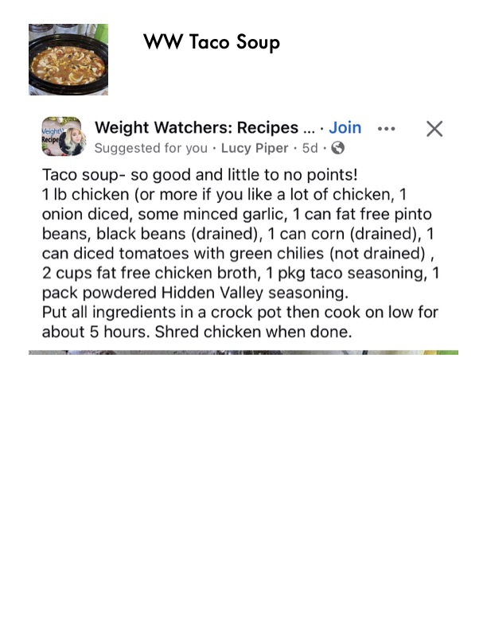

WW Taco Soup

Original cookbook page 623
Ingredients
- 1 lb chicken (or more if you like a lot of chicken, 1
- 2 cups fat free chicken broth, 1 pkg taco seasoning, 1
Instructions
- 1 lb chicken (or more if you like a lot of chicken, 1 onion diced, some minced garlic, 1 can fat free pinto beans, black beans (drained), 1 can corn (drained), 1 can diced tomatoes with green chilies (not drained) , 2 cups fat free chicken broth, 1 pkg taco seasoning, 1 pack powdered Hidden Valley seasoning.
- Put all ingredients in a crock pot then cook on low for about 5 hours.
Recipe #623 from collection